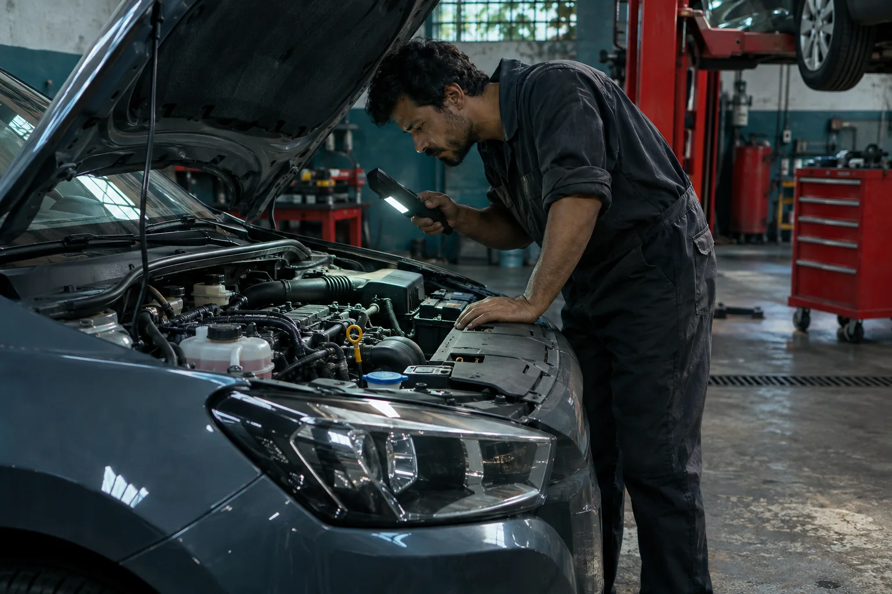

Revisão preventiva
Verificação dos itens de manutenção conforme o uso do veículo.
Revisão, diagnóstico e manutenção. Você explica o que percebeu no carro e a oficina orienta a próxima etapa.
Iniciar triagem
Verificação dos itens de manutenção conforme o uso do veículo.
Inspeção dos componentes antes de definir o reparo.
Investigação de ruído, luz no painel ou mudança de desempenho.
Selecione o serviço e as características do carro para a oficina orientar o primeiro atendimento.
Simulação concluída. Nenhum pedido foi enviado.